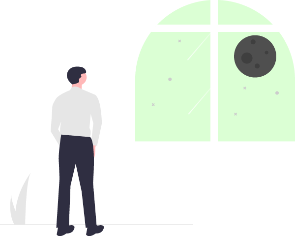

You can modify previous steps by clicking the buttons above. Click the button below when you're ready to go.
This might take up to 5 minutes depending on the length of your podcast and the speed of your computer. Grab a coffee. Go pet your cat.
